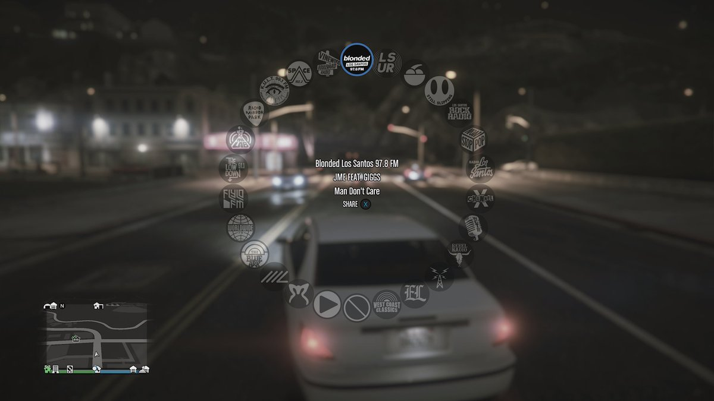

SUPER MARIO: la prima colonna sonora è 'Ground Theme', fu scritta dal compositore della Nintendo, Koji Kondo. Secondo la Biblioteca 'si tratta della colonna sonora di videogioco più riconoscibile della storia' (fonte: ANSA). Vorrei però spostare l'attenzione su altri aspetti musicali del videogioco: gli EASTER EGG.
1. La Totaka Song in "Mario Kart 8": è una semplice melodia di 19 note e 8 battute. Il sound designer di Nintendo Kazumi Totaka è noto per averlo inserito nella maggior parte dei titoli su cui ha lavorato. La canzone è spesso nascosta, dunque è complicato riuscire a trovarla. In Mario Kart 8, la si può ascoltare se ci si posiziona al borso pista, accanto ad uno Yoshi gigante: qui si potrà udire un'orchestra, ma prestando la giusta attenzione si riuscirà a sentire anche la tanto ricercata canzoncina.
2. Un easter egg particolare in "Mario Kart 8": nella seconda curva del gioco si può prendere una "scorciatoia" che porterà sotto una giostra acquatica, dove, restando al centro per 5 secondi, si potrà udire un motivetto abbastanza oscuro presente in "Super Mario 64".
GRAND THEFT AUTO V: l'aspetto forse più divertente di questo gioco è quello di poter rubare auto (ma attento alla polizia!) per raggiungere i tuoi posti preferiti della città o anche solo per farti un bel giro.
Cliccando l'apposito comando, si aprirà una schermata con ben 24 diverse stazioni radio e una venticinquesima dove potrai riprodurre la tua musica personale; i brani ripercorrono i vari anni, dal rock anni 70-80 fino a quelle reggae più recenti, passando dal rap all'hip-hop con un solo click.
Per non farci mancare proprio niente, se nella riproduzione trovi una canzone a te gradita, o magari quella che cercavi da tempo ma non conoscevi il titolo, puoi salvarla nella tua libreria (la ritroverai nel launcher di Rockstar Games).
Di seguito toverai la playlist con tutte le canzoni presenti nel gioco, così da poterle ascoltare in qualsiasi momento: magari troverai la tua preferita!
FORTNITE: L'aspetto musicale nel gioco in questione risiede nelle emote. Queste, acquistate tramite la valuta del gioco, oltre a simulare azioni e scene di vario tipo (mangiare, piangere, ridere) simulano anche dei balletti.
I personaggi ballano sulle note di canzoni famossissime quali "Shout", "Dragostea-din-tei" e tante altre.
Sono state fatte anche collaborazioni con cantanti del calibro di Kid Laroi e Travis Scott, dove le emote hanno come sottofondo le loro canzoni più famose.
In altre parole, se durante matchmaking di una partita ti stai annoiando o semplicemente vuoi vedere il tuo personaggio che balla sulle note della famossissima Lizzo, ti basterà selezionare l'emote.
Cliccando il spulsante potrai vedere tutte le emote presenti nel gioco, comprese quelle sopracitate.